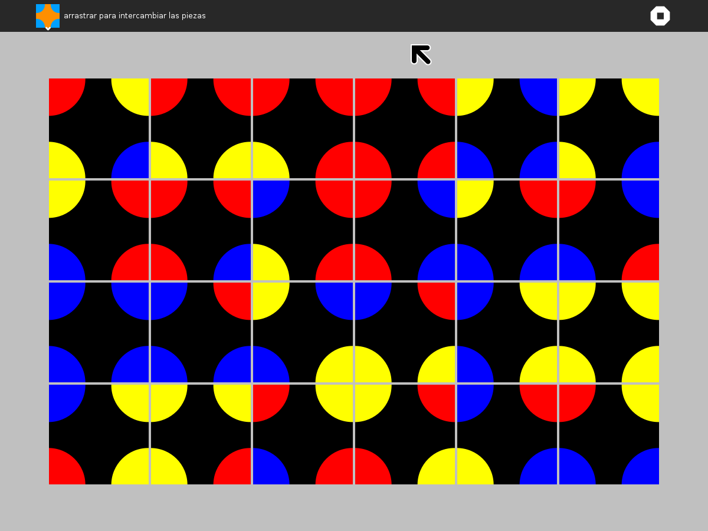
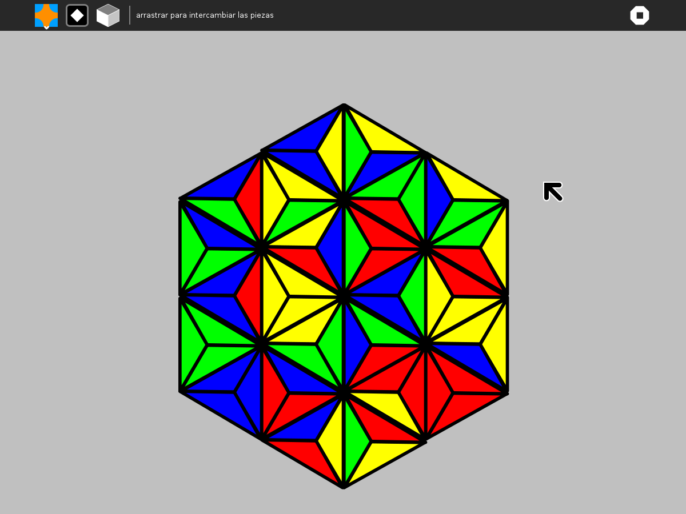
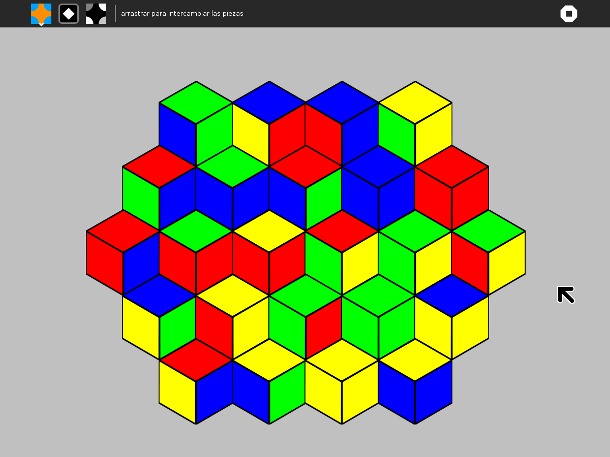

Pukllanapac¶
  


Where to get Pukllanapac¶
About Pukllanapac¶
Pukllanapac is a sliding-puzzle game; the objective is to rearrange tiles so that all of the circles (and semicircles) are composed of sectors of the same color. There are three different patterns: circles, triangles, and hexagons. Drag tiles to swap their positions; click on tiles to rotate them.
The circle puzzle has three levels of play:
beginner, which is a 2×2 arrangement of tiles;
intermediate, which is a 4×2 arrangement of tiles; and
expert, which is a 6×4 arrangement of tiles.
Warning: the first two levels are relatively easy, but the final level is challenging.
Pukllanapac is an Incan (Quechua) word for ‘picture’. Oscar Becerra was the inspiration behind the activity.
Filing bug reports¶
You can report bugs and make feature requests at pukllanapac/issues